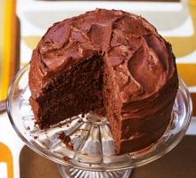

Chocolate Fudge Cake

Need a guaranteed crowd-pleasing cake that's easy to make? This super-squidgy chocolate fudge cake with smooth icing is an instant baking win
Ingredients
For the cake...
- Sunflower oil
- Self-raising flour
- Cocoa powder
- Bicarbonate of soda
- Caster sugar
- Golden syrup
- Large eggs
- Semi-skimmed milk
For the icing...
- Unsalted butter
- Icing sugar
- Cocoa powder
- Milk
Steps
- Heat the oven to 180C/160C fan/gas 4. Oil and line the base of two 18cm sandwich tins. Sieve the flour, cocoa powder and bicarbonate of soda into a bowl. Add the caster sugar and mix well.
- Make a well in the centre and add the golden syrup, eggs, sunflower oil and milk. Beat well with an electric whisk until smooth.
- Pour the mixture into the two tins and bake for 25-30 mins until risen and firm to the touch. Remove from oven, leave to cool for 10 mins before turning out onto a cooling rack.
- Layer the lasagna according to the recipe instructions
- To make the icing, beat the unsalted butter in a bowl until soft. Gradually sieve and beat in the icing sugar and cocoa powder, then add enough of the milk to make the icing fluffy and spreadable.
- Sandwich the two cakes together with the butter icing and cover the sides and the top of the cake with more icing.
- Enjoy!